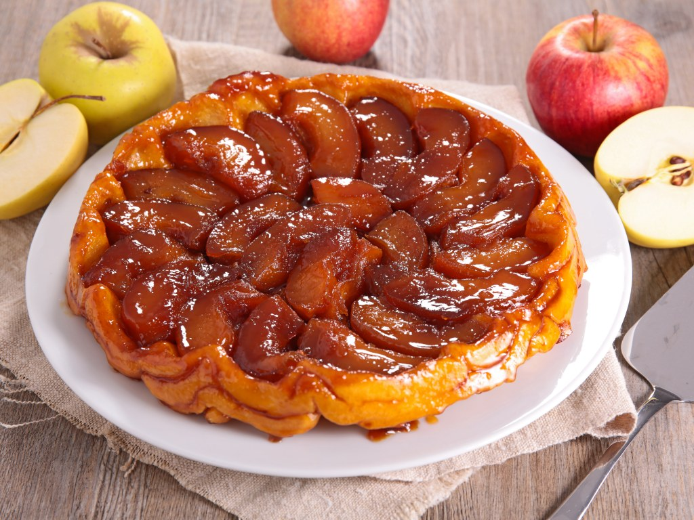
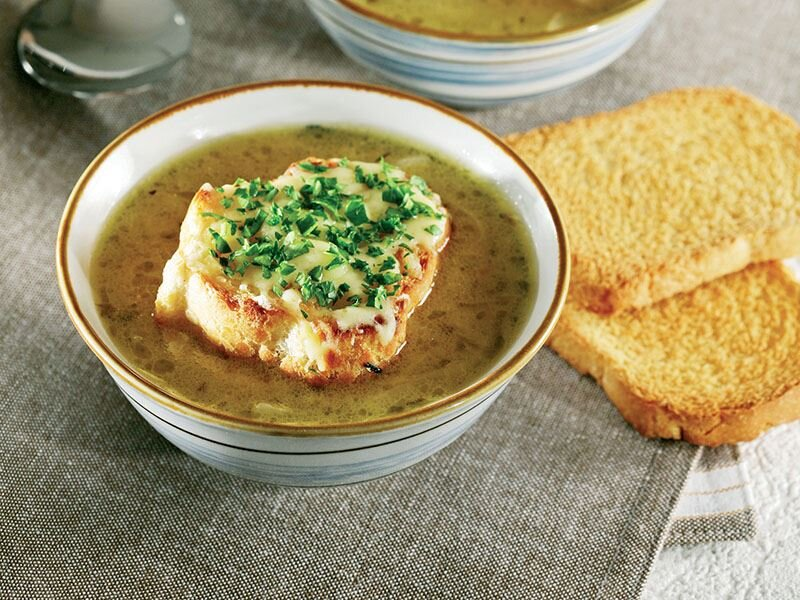
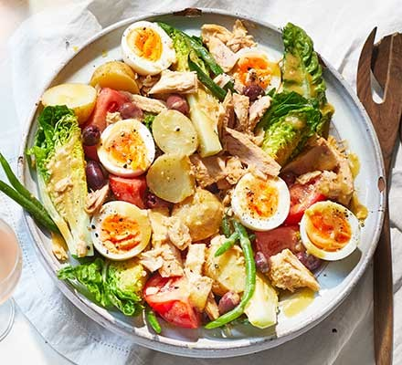
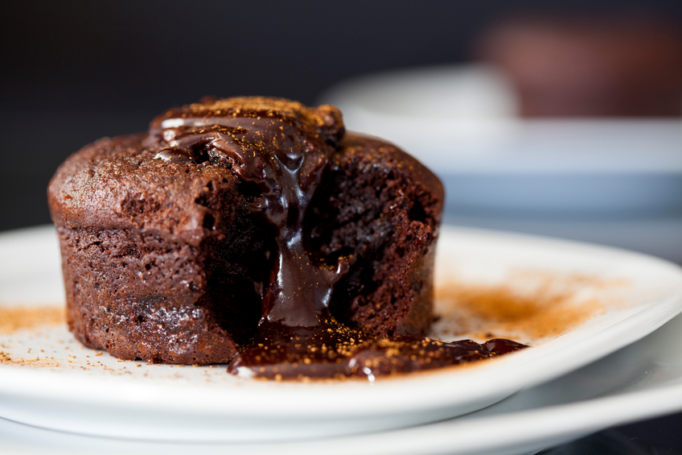
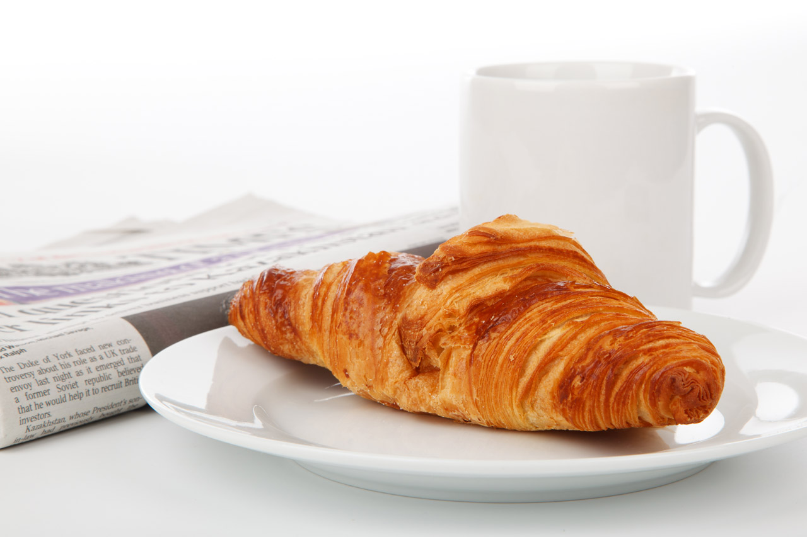
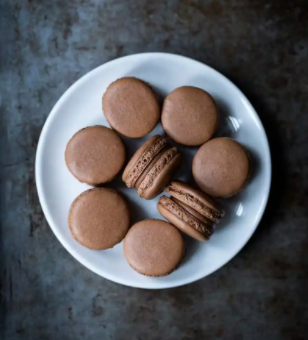

Merhaba, hoşgeldiniz. Bu sayfamızda size yemekten doyamayacağınız yemek çeşitlerini sunuyoruz...
1. Tarte Tatin:
Tarte Tatin, hamuru fırınlanmadan önce dolgunun üzerine yerleştirilen, şeker ve tereyağı ile
karamelize edilmiş bir elmalı turtadır. Daha sonra bir tabağa ters çevrilir ve sıcak olarak servis edilir.

2. French onion soup:
Fransız soğan çorbası genellikle et suyuna ve soğana dayalı bir çorbadır ve genellikle
krutonlu graten veya üstünde yüzen peynirle kaplanmış daha büyük bir ekmek parçası
ile servis edilir. Kökeni eski olan yemek, 1960'larda Fransız mutfağına daha fazla ilgi gösterilmesi nedeniyle
Amerika Birleşik Devletleri'nde popülerlik yeniden canlandı. Fransız soğan çorbası, kendi başına bir yemek olarak
veya ilk yemek olarak servis edilebilir.

3.Salade niçoise:
Fransa'nın Nice şehrinde ortaya çıkan bir salatadır. Geleneksel olarak domates, haşlanmış yumurta,
Niçoise zeytini ve hamsi veya ton balığı ile zeytinyağı ile tatlandırılmış veya bazı tarihi versiyonlarda
salata sosu ile yapılır. 20. yüzyılın başlarından beri dünya çapında popüler olmuştur ve birçok şef tarafından
hazırlanıp tartışılmıştır. Delia Smith, "şimdiye kadar icat edilen en iyi salata malzemeleri kombinasyonlarından
biri" olarak nitelendirdi ve Gordon Ramsay, "tüm yazların en iyi salatası olmalı" dedi.
İster kompostolu salata, isterseniz de ara öğün olarak servis edilebilir. Taze pişmiş veya konserve ton balığı eklenebilir.
Onlarca yıldır gelenekçiler ve yenilikçiler, hangi bileşenlerin dahil edilmesi gerektiği konusunda anlaşamadılar; gelenekçiler
pişmiş sebzeleri hariç tutar. Salata, çiğ kırmızı biber, arpacık, enginar kalbi ve diğer mevsimlik çiğ sebzeleri içerebilir.
İlkbaharda, henüz genç ve gevrekken hasat edilen çiğ yeşil fasulye de dahil edilebilir. Bununla birlikte, pişmiş yeşil
fasulye ve patates, dünya çapında popüler olan salata çeşitlerinde yaygın olarak servis edilir.

3.Salade niçoise:
Sufle, kökeni 18. yüzyıl Fransa'sına dayanan tatlıdır. Sufle, bir ana yemek veya tatlı olarak servis edilebilir. Sözcük,
Fransızca "souffler" fiilinden türetilmiştir.

4.Croissant:
Avusturya menşeli tereyağlı, lapa lapa, viennoiserie böreğidir, Fransa. Adını tarihi hilal şeklinden alan kruvasanlar,
diğer şaraphaneler gibi kat kat mayalı mayalı hamurdan yapılır. Hamur, tereyağı ile katmanlanır, arka arkaya birkaç kez
yuvarlanır ve katlanır, ardından laminasyon adı verilen bir teknikle ince bir tabaka halinde yuvarlanır. İşlem, puf
böreğine benzer katmanlı, pul pul bir doku ile sonuçlanır.

5.Macaron:
tatlı bir bezedir yumurta akı, pudra şekeri, toz şeker, badem unu ve gıda boyası ile yapılan şekerleme.
Macaron'un geleneksel olarak, Rönesans döneminde kraliçe Catherine de Medici'nin İtalyan şefi tarafından
Fransa'da tanıtıldığı düşünülmektedir. 19. yüzyıldan beri, tipik bir Paris tarzı makaron, bir sandviç
kurabiyesine benzer şekilde, bu tür iki kurabiye arasına sıkıştırılmış bir ganaj, tereyağı kreması veya
reçel dolgusu ile sunulur. Şekerleme, düz kare bir üst kısım, fırfırlı bir çevre ("taç" veya "ayak"
(veya "alaca") olarak anılır) ve düz bir taban ile karakterize edilir. Hafif nemlidir ve ağızda kolayca
erir. Makaronlar, gelenekselden (ahududu, çikolata) sıra dışı (kaz ciğeri, matcha) kadar çok çeşitli tatlarda bulunabilir.
